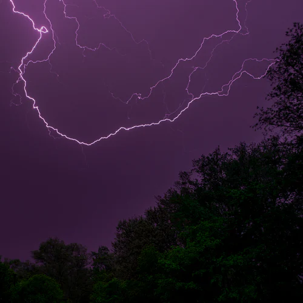
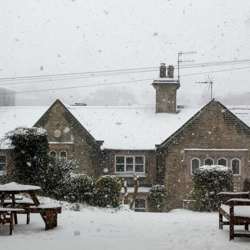
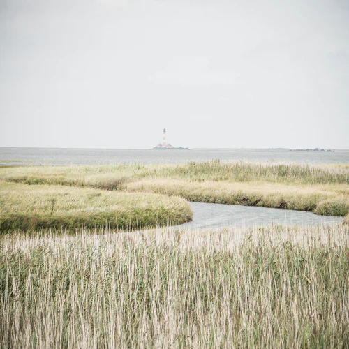

Sky Watcher
We watch the sky so you don't have to!
☰ Menu
Home
Preston
Soda Springs
Fish Haven
Storm Center
Gallery
Cloudy sky with waterfall
Northern Lights
Dark cloudy sky
Foggy forest

Purple sky with lighning
Sunset with wheat
Raining in the city

Snow on a building

Windy wheat fields